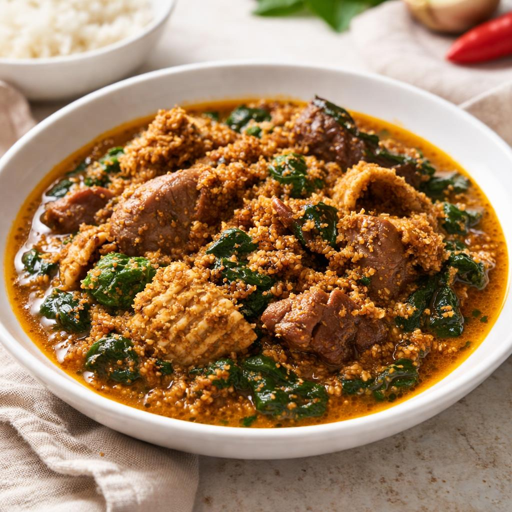

About Egusi Soup
Egusi Soup is a popular Nigerian dish made with ground melon seeds. The seeds give the soup its thick texture and rich, nutty flavour. It is commonly prepared for family meals, celebrations and special gatherings.
The soup combines ground egusi with palm oil, tomatoes, peppers, onions and leafy vegetables such as spinach or bitterleaf. Beef, goat meat, stockfish or dried fish can be added for extra flavour. It is traditionally enjoyed with pounded yam, eba, fufu or semolina.
- Origin: Nigeria
- Preparation time: 20 minutes
- Cooking time: 45 minutes
- Total time: 1 hour 5 minutes
- Difficulty: Medium
- Servings: 4 people
Ingredients
Choose the number of people to automatically adjust the ingredient quantities.
- 2 cups ground egusi (melon seeds)
- 500 g assorted meat
- 200 g fresh spinach or bitterleaf
- ½ cup palm oil
- 1 large onion, chopped
- 2 medium tomatoes, blended
- 2 medium red bell peppers
- 1 small Scotch bonnet pepper
- 2 pieces stock cubes
- 1 teaspoon ground crayfish
- To taste salt
- 2 cups meat stock or water
How to Prepare Egusi Soup
- Prepare the meat: Wash the assorted meat and place it in a pot. Add chopped onions, salt and stock cubes. Add a little water and cook until the meat is tender. Keep the meat stock for the soup.
- Prepare the egusi: Mix the ground melon seeds with a small amount of water to form a thick paste.
- Cook the pepper mixture: Blend the tomatoes, red bell peppers and Scotch bonnet pepper. Heat palm oil in a pot, add chopped onions and stir in the blended mixture. Cook for about 10 minutes.
- Add the egusi: Add the egusi paste in small portions. Allow it to cook for several minutes, stirring gently so the mixture develops a thick texture.
- Add meat and stock: Add the cooked meat, meat stock and ground crayfish. Stir everything together and simmer for about 10 to 15 minutes.
- Add the vegetables: Wash and add the spinach or bitterleaf. Stir and cook for another 3 to 5 minutes until the vegetables are tender.
- Serve: Taste and adjust the seasoning. Serve the hot Egusi Soup with pounded yam, eba, fufu or semolina.
Serving Suggestions
Egusi Soup is traditionally enjoyed with a swallow such as pounded yam, eba or fufu. These foods are used to scoop up the thick soup. It can also be served with semolina.